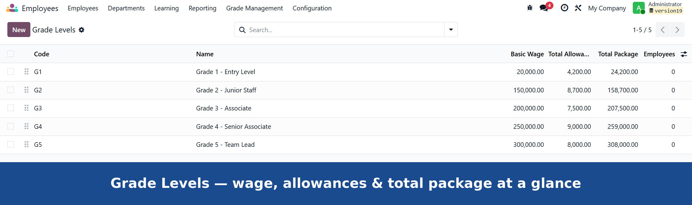
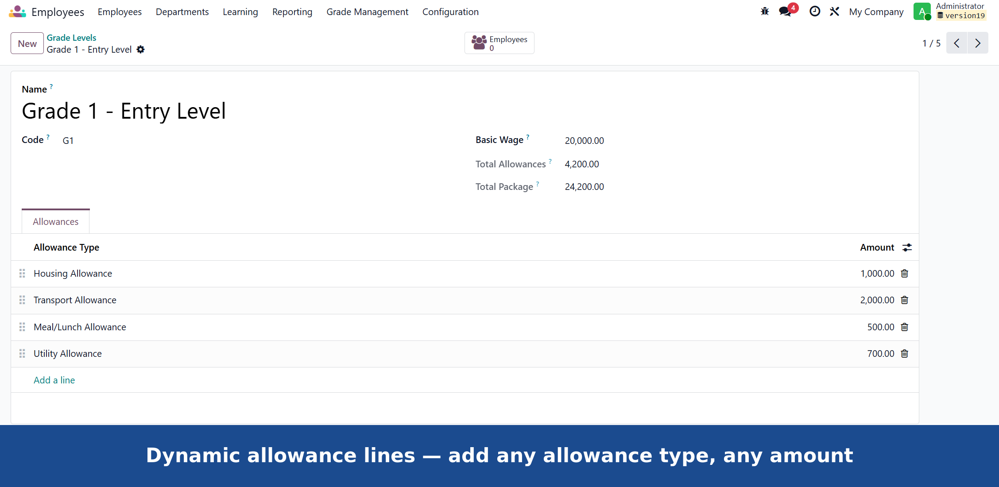
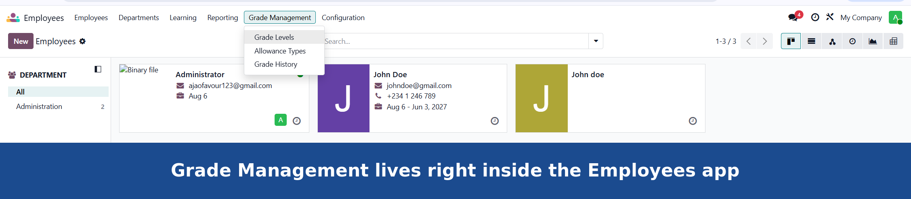
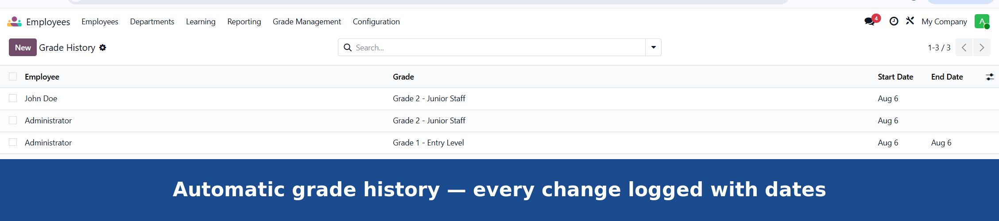
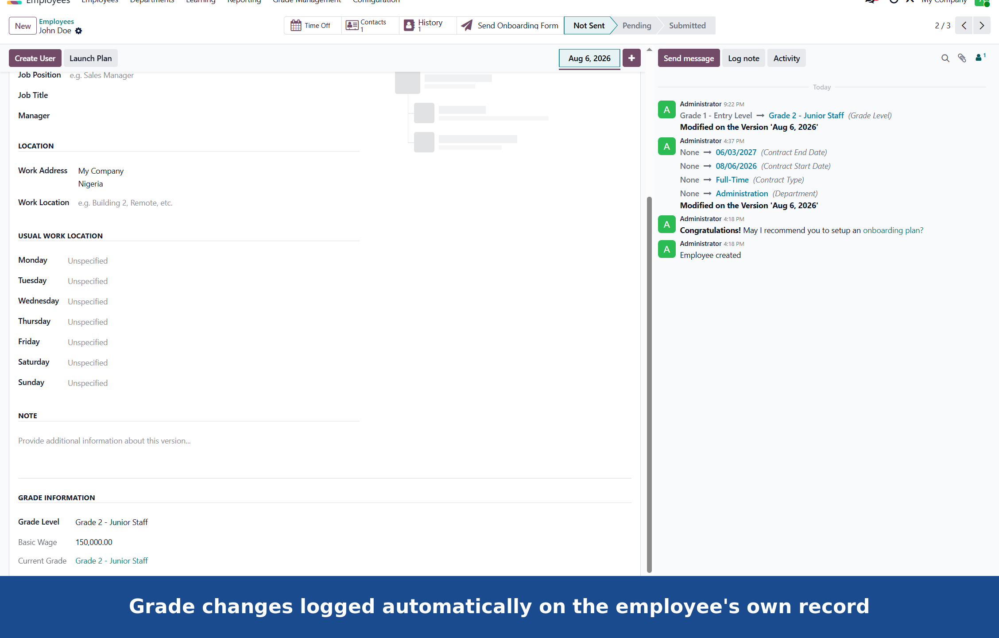

Define grade levels, attach flexible allowances, and assign employees to grades — independent of payroll.
Most organizations pay according to a grade or band system — Grade 5, Grade 7, Level III — where each tier carries a base wage plus a standard bundle of allowances. Odoo's core HR doesn't model this out of the box. Employee Grade Management adds that layer, fully configurable from the UI, with no assumptions about how many allowances you have or what they're called.
Create as many grades as you need, each with its own base wage. Allowance and package totals compute automatically as you build them out.
Define allowance types once — Housing, Transport, HMO, or anything specific to your organization — and attach any combination of them to any grade.
Assign a grade to an employee through their contract. Their current grade, wage, and allowance breakdown appear directly on their profile.
Every grade change is logged automatically with a start and end date, giving you a full audit trail for promotions, compliance, and appraisal cycles.
Jump straight from a grade to the list of employees currently on it, with a live count right on the grade form.





This module manages grade and allowance structure only — it does not compute or print payslips. If you need these allowances to flow directly into payroll computation, reach out to us at ajaofavour123@gmail.com to discuss a payroll integration for your setup.
For setup assistance, custom allowance structures, or connecting this to your payroll process, get in touch directly ajaofavour123@gmail.com.